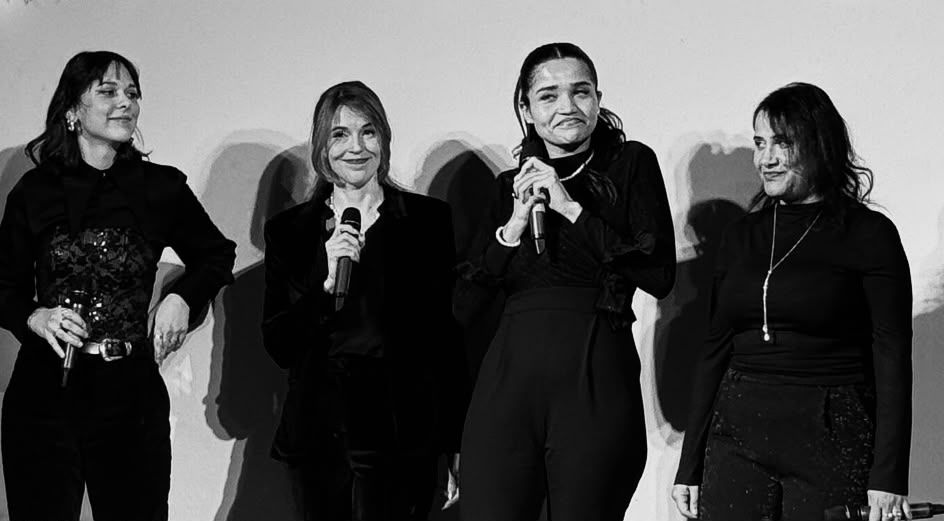
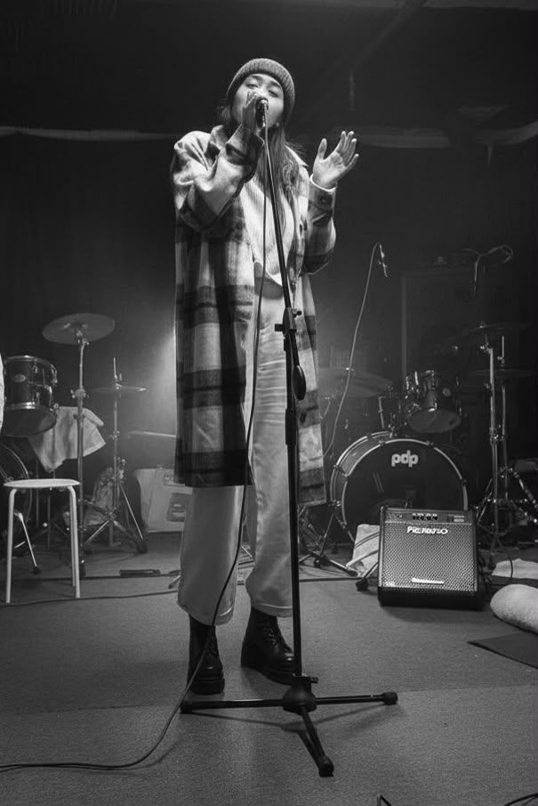
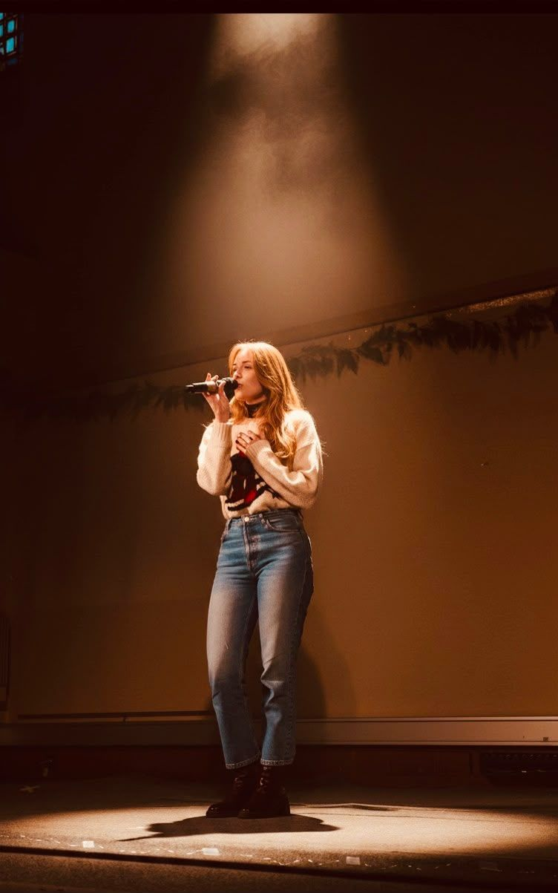
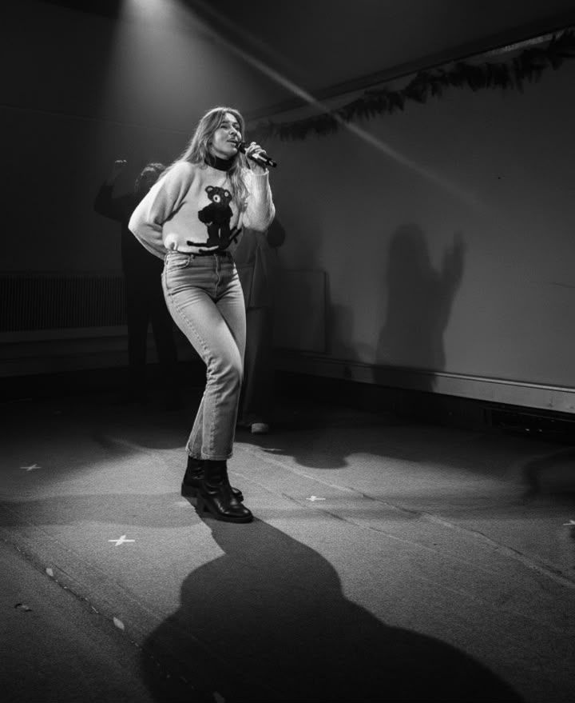
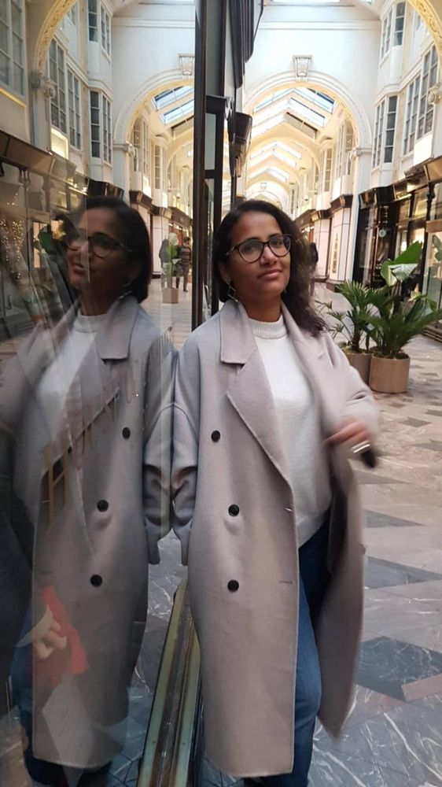

Qui Nous Sommes
La Compagnie Expressive Singing n'est pas une liste de noms, c'est une famille de voix. Nous venons tou·te·s de mondes différents : enseignant·e·s et artistes, débutant·e·s et chanteur·se·s de toujours, des personnes façonnées par des cultures, des langues et des métiers différents. Ce que nous partageons, c'est l'amour de chanter ensemble, et le sentiment d'avoir enfin trouvé un lieu où chaque voix a sa place.
Ici, la libre expression et la créativité de chacun·e sont un droit. Nous accueillons la diversité, nous écoutons, et nous faisons de la pratique du chant un outil de confiance, de développement personnel et de connexion sincère entre les individus. Autour de ces valeurs, des inconnu·e·s deviennent une communauté — et une communauté devient une famille.




Le Comité

Fondatrice & Directrice Artistique
Imane El Baladi
Chanteuse, coach vocale et créatrice d'Expressive Singing — une approche unique qui mêle voix, émotion, corps et imagination. Avec une formation en sciences de la médiation et un Master en Vocologie Artistique, elle guide enfants et adultes pour explorer leur voix comme un puissant outil d'expression et de connexion.

Membre du Comité
Mouniah El Shikh
Mouniah est née et a grandi à Genève et est titulaire d'un Master en Études Internationales. Après avoir travaillé à Londres, elle est rentrée en Suisse, vivant à Zurich avant de revenir s’installer à Genève.
Parallèlement à sa carrière, elle a toujours cultivé sa créativité et son goût d’apprendre. Au fil des années, elle a exploré des styles de danse comme le tango, la kizomba, la salsa, le Bharatanatyam et le théâtre. Elle aime aussi voyager et jouer au backgammon ou aux échecs.
Président
Davide Schiavone
Dirige le développement d'Expressive Singing, construisant des ponts entre l'excellence artistique et l'impact communautaire.